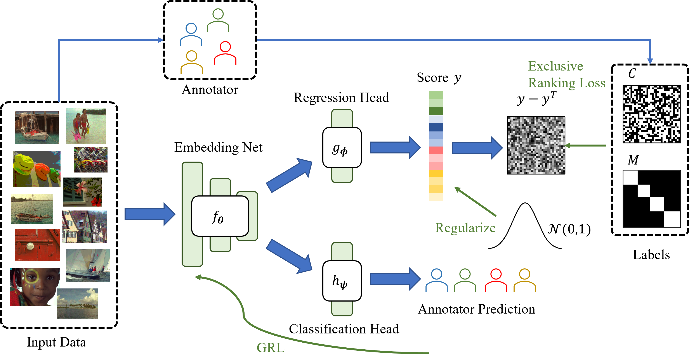

Xiaoqian Ruan
I am Xiaoqian Ruan, a PhD student in the EVL lab at University of Illinois Chicago, advised by Prof. Wei Tang.
My research focuses on 3D reconstruction, Test-time Adaptation, and Object detection.
Publications
- Xiaoqian Ruan, Pei Yu, Dian Jia, Hyeonjeong Park, Peixi Xiong, Wei Tang. Learning Partonomic 3D Reconstruction from Image Collections. CVPR 2025. [üìÑ Paper]
- Dian Jia, Xiaoqian Ruan, Kun Xia, Zhiming Zou, Le Wang, Wei Tang. Analysis-by-Synthesis Transformer for Single-View 3D Reconstruction. ECCV 2024. [üìÑ Paper]
- Xiaoqian Ruan, Wei Tang. Fully Test-time Adaptation for Object Detection. CVPRW 2024. [üìÑ Paper]
- Xiaoqian Ruan, Guosheng Lin, Cheng Long, and Shengli Lu. Few-shot fine-grained classification with Spatial Attentive Comparision. Knowledge-Based Systems 218 (2021). [üìÑ Paper]
- Xiaoqian Ruan, Hao Liu, Wei Pang, and Shengli Lu. Fine-gained Classification Algorithm based on Meta-learning. 2019 IEEE International Conference on Power, Intelligent Computing and Systems (ICPICS). [üìÑ Paper]
Selected Research

Learning Partonomic 3D Reconstruction from Image Collections
Xiaoqian Ruan, Pei Yu, Dian Jia, Hyeonjeong Park, Peixi Xiong, Wei Tang
CVPR 2025
Analysis-by-Synthesis Transformer for Single-View 3D Reconstruction
Dian Jia, Xiaoqian Ruan, Kun Xia, Zhiming Zou, Le Wang, Wei Tang
ECCV 2024

Fully Test-time Adaptation for Object Detection
Xiaoqian Ruan, Wei Tang
CVPRW 2024

Disjoint Contrastive Regression Learning for Multi-Sourced Annotations
Xiaoqian Ruan, Gaoang Wang
Few-shot fine-grained classification with Spatial Attentive Comparison
Xiaoqian Ruan, Guosheng Lin, Cheng Long, Shengli Lu
Knowledge-Based Systems